<!DOCTYPE html>
<html>
<head>
 <title>Жемчужины Краснодарского края и республики Адыгея</title>
 <meta charset="utf-8" />
 <meta name="viewport" content="width=device-width, initial-scale=1.0">
 <link href="http://netdna.bootstrapcdn.com/font-awesome/4.5.0/css/font-awesome.css" rel="stylesheet">
 <link rel="stylesheet" href="http://cdn.leafletjs.com/leaflet/v0.7.7/leaflet.css" />
 <link rel="stylesheet" href="css/leaflet.awesome-markers.css">
<style>
body {
 padding: 0;
 margin: 0;
}
html, body, #map {
height: 100%;
}
</style>

</head>
<body>
<div id="map"></div>

<script src="http://cdn.leafletjs.com/leaflet/v0.7.7/leaflet.js"></script>
<script src="js/leaflet.awesome-markers.js"></script>

<script>
var LeafIcon = L.Icon.extend({
			options: {
				shadowUrl: 'lf-images/leaf-shadow.png',
				iconSize:     [38, 95],
				shadowSize:   [50, 64],
				iconAnchor:   [22, 94],
				shadowAnchor: [4, 62],
				popupAnchor:  [-3, -76]
			}
		});

var greenIcon = new LeafIcon({iconUrl: 'lf-images/leaf-green.png'}),
    redIcon = new LeafIcon({iconUrl: 'lf-images/leaf-red.png'}),
    orangeIcon = new LeafIcon({iconUrl: 'lf-images/leaf-orange.png'});

natureIcon = L.AwesomeMarkers.icon({icon: 'tree', prefix: 'fa', markerColor: 'green', spin:false}); 
parkIcon = L.AwesomeMarkers.icon({icon: 'group', prefix: 'fa', markerColor: 'darkgreen', spin:false}); 
museumIcon = L.AwesomeMarkers.icon({icon: 'building', prefix: 'fa', markerColor: 'red', spin:false}); 
archIcon = L.AwesomeMarkers.icon({icon: 'diamond', prefix: 'fa', markerColor: 'black', spin:false}); 

var cities = new L.LayerGroup();
var l_nature = new L.LayerGroup();
var l_arch = new L.LayerGroup();
var l_park = new L.LayerGroup();
var l_museum = new L.LayerGroup();

L.marker([44.620673, 39.09382],{icon: natureIcon}).bindPopup('<h3>Дантово ущелье</h3><p>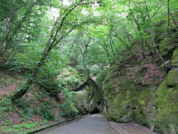Расположено в курортной части города</img></p>').addTo(l_nature);
L.marker([44.808223, 37.439941],{icon: natureIcon}).bindPopup('<b>Болотные кипарисы</b><p>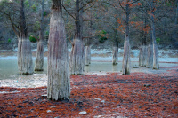Болотные кипарисы, озеро Сукко, поселок Сукко, город-курорт Анапа</p>').addTo(l_nature);
L.marker([44.607433, 40.097486],{icon: archIcon}).bindPopup('<b>Майкопская кафедральная мечеть</b><p>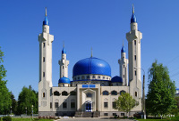Расположена в центральной части города</img></p>').addTo(l_arch);
L.marker([44.643751, 37.935486],{icon: parkIcon}).bindPopup('<h3>Культурный Центр "Старый парк"</h3><p>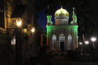</img>Кабардинка, ул. Черноморская, 55. Старый Парк – уникальное место на юге России, где архитектура сплетается с живой природой, где вы сможете приобщиться к истории народов и почувствовать единство культур, соприкоснуться с произведениями современного искусства и обнаружить их корни в глубине веков и тысячелетий.</p>').addTo(l_park);
L.marker([44.466255, 38.160882],{icon: museumIcon}).bindPopup('<b>Дом-музей В.Г. Короленко</b><p>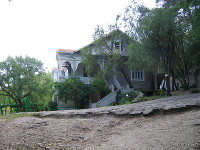</img>Создан в 1964 г. на базе усадьбы брата писателя И.Г.Короленко. Усадьба  - памятник истории, один из образцов усадеб первых русских интеллигентных поселенцев на Черноморском побережье Кавказа конца XIX - нач. ХХ вв. Экскурсионное обслуживание по предварительной договорённости.</p>').addTo(l_museum);
L.marker([46+35/60+44/60/60,39+39/60+53/60/60],{icon: museumIcon}).bindPopup('<b>Мемориал "Поле казачьей славы"</b><p>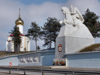</img></p><p>Открыт 04 августа 2007 г. в станице Кущевской у федеральной трассы М-4 возле знаменитого памятника "Казак". Открытие приурочено к 65-летию Кущевской битвы, произошедшей в 1942 году, когда казаки 15-й Донской и 12-й Кубанской кавалерийских дивизий насмерть держали оборону, остановив танковую атаку немецко-фашистских войск. Комплекс включает в себя памятник "Казак", надвратную часовню, Стену памяти, бытовые постройки кубанских казаков и предметы их быта.').addTo(l_museum);
L.marker([44.808014, 39.948811],{icon: natureIcon}).bindPopup('<b>Дендрологический парк им. П.В.Букреева</b><p>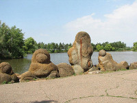</img>Более 350 видов растений и уникальный музей камней</p>').addTo(l_nature);
L.marker([44.725429,37.867192],{icon: natureIcon}).bindPopup('<b>Перевал "Семь ветров"</b><p>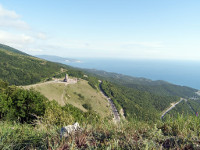</img></p>').addTo(l_nature);
L.marker([44.236798,40.205370],{icon: archIcon}).bindPopup('<b>Старый казачий мост</b><p>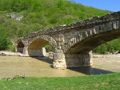</img>Построен мост через реку Дах был в 1906 году. В раствор, скрепляющий камни, добавляли яичный белок. Говорят, именно благодаря белку мост был очень крепким</p>').addTo(l_arch);
L.marker([46.204217,38.249187],{icon: natureIcon}).bindPopup('<h3>Ясенская коса</h3><p>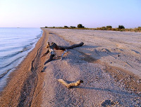</img>Длина Ясенской косы составляет 14 км</p>').addTo(l_nature);
L.marker([44.702514,37.597184],{icon: natureIcon}).bindPopup('<h3>Озеро Абрау</h3><p>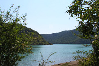</img>!!!!</p>').addTo(l_nature);
L.marker([44.781997,37.868222],{icon: archIcon}).bindPopup('<h3>"Святая ручка"</h3><p>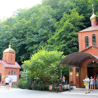</img>Комплекс источников «Святая ручка», в районе станицы Небержаевской, Крымский район</p>').addTo(l_arch);
L.marker([45.013291,37.876413],{icon: archIcon}).bindPopup('<h3>Бабушка-вышка</h3><p>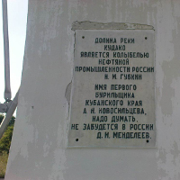</img>Первая нефтяная скважина в России</p>').addTo(l_arch);
L.marker([44.240839,39.275245],{icon: natureIcon}).bindPopup('<h3>Гора Индюк</h3><p>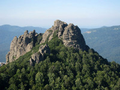</img>!!!!</p>').addTo(l_nature);

/*
    L.marker([51.941196,4.512291], {icon: L.AwesomeMarkers.icon({icon: 'spinner', prefix: 'fa', markerColor: 'red', spin:true}) }).addTo(map);
    L.marker([51.927913,4.521303], {icon: L.AwesomeMarkers.icon({icon: 'coffee', prefix: 'fa', markerColor: 'red', iconColor: '#f28f82'}) }).addTo(map);
    L.marker([51.936063,4.502077], {icon: L.AwesomeMarkers.icon({icon: 'cog', prefix: 'fa', markerColor: 'purple', iconColor: 'black'}) }).addTo(map);
    L.marker([51.932835,4.506969], {icon: L.AwesomeMarkers.icon({icon: 'glass', prefix: 'fa', markerColor: 'green'}) }).addTo(map);
    L.marker([51.930295,4.515209], {icon: L.AwesomeMarkers.icon({icon: 'shopping-cart', prefix: 'fa', markerColor: 'blue'}) }).addTo(map);
    L.marker([51.930083,4.507742], {icon: L.AwesomeMarkers.icon({icon: 'info', prefix: 'fa', markerColor: 'orange'}) }).addTo(map);

    L.marker([51.930454,4.527054], {icon: L.AwesomeMarkers.icon({icon: 'group', prefix: 'fa', markerColor: 'darkred'}) }).addTo(map);
    L.marker([51.929607,4.527054], {icon: L.AwesomeMarkers.icon({icon: 'arrow-right', prefix: 'fa', markerColor: 'darkblue'}) }).addTo(map);
    L.marker([51.928919,4.528856], {icon: L.AwesomeMarkers.icon({icon: 'twitter', prefix: 'fa', markerColor: 'cadetblue'}) }).addTo(map);
    L.marker([51.930295,4.530745], {icon: L.AwesomeMarkers.icon({icon: 'phone', prefix: 'fa', markerColor: 'darkpurple'}) }).addTo(map);
    L.marker([51.925055,4.512806], {icon: L.AwesomeMarkers.icon({icon: 'ambulance', prefix: 'fa', markerColor: 'darkgreen'}) }).addTo(map);
    L.marker([51.925902,4.505768], {icon: L.AwesomeMarkers.icon({icon: 'medkit', prefix: 'fa', markerColor: 'darkblue'}) }).addTo(map);
*/

// L.circleMarker([44.607433, 40.097486], {radius: 8,fillColor: "#ff7800",color: "#000",weight: 1,opacity: 1,fillOpacity: 0.8}).bindPopup('<b>Майкопская кафедральная мечеть</b><p>Расположена в центральной части города</img></p>').addTo(l_arch);


	    var mbAttr = '';
		mbUrl = 'https://api.tiles.mapbox.com/v4/{id}/{z}/{x}/{y}.png?access_token=pk.eyJ1IjoibWFwYm94IiwiYSI6ImNpandmbXliNDBjZWd2M2x6bDk3c2ZtOTkifQ._QA7i5Mpkd_m30IGElHziw';

	    var grayscale   = L.tileLayer(mbUrl, {id: 'mapbox.light', attribution: mbAttr}),
		    streets  = L.tileLayer(mbUrl, {id: 'mapbox.streets',   attribution: mbAttr});

var map = L.map('map', 
{
 center: [45.1, 39.0],
 zoom: 8,
 layers: [streets, l_nature,l_arch,l_park,l_museum]
});

		var baseLayers = {
			"Серый фон": grayscale,
			"Open Street Map": streets
		};

var overlays = 
{
 "Природа": l_nature,
 "Архитектура": l_arch,
 "Музеи": l_museum,
 "Парки": l_park
};

L.control.layers(baseLayers, overlays).addTo(map);
</script>
</body>
</html>
